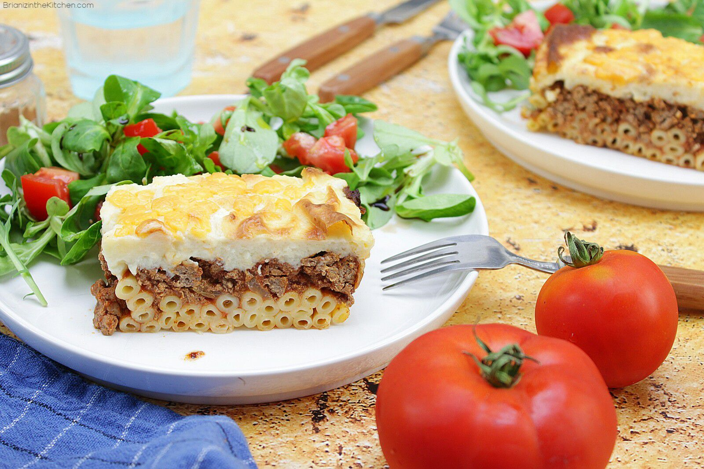

Pastitsio Grecque

Description
Le pastítsio est un plat de la cuisine grecque, chypriote et méditerranéenne, composé de pâtes, de viande hachée, le tout étant nappé de sauce béchamel. Ce plat est cuit au four. Il s'agit d'une variante du plat italien, le pasticcio di pasta
Ingredients
- huile d'olive
- oignon haché
- 30 cl de bouillon de boeuf
- 50 g de beurre
- 40 g de farine
- poivre
- sel
- 250 g de macaroni
- 3 gousses d'ail écrasées
- 400 g de bifteck haché
- 2 c.à.s de concentré de tomates
- 1 c.à.c de cannelle et 1 de cumin
-
Steps
- Cuire les macaronis "al dente" dans de l'eau salée.
- Faite blondir l'ail et l'oignon dans un peu d'huile d'olive. Incorporer la viande hachée. Laisser cuire.
- Mélanger le bouillon tiède la menthe le cumin la cannelle et le concentré de tomate puis incorporer à la viande. Saler, poivrer. Laisser mijoter 10 mn.
- Faite fondre le beurre dans un casserole, incorporer la farine puis le lait préalablement mélangé au yaourt. Laisser cuire doucement 5 mn.
- Retirer du feu et incorporer le fromage, mélanger. Saler poivrer. Mélanger cette sauce aux macaronis.
- Verser la moitié des macaronis dans un plat à gratin, recouvrir de la sauce à la viande, étaler par dessus le reste de macaronis. Couvrir de fromage et laisser gratiner au four jusqu'à ce que le dessus soit bien doré.